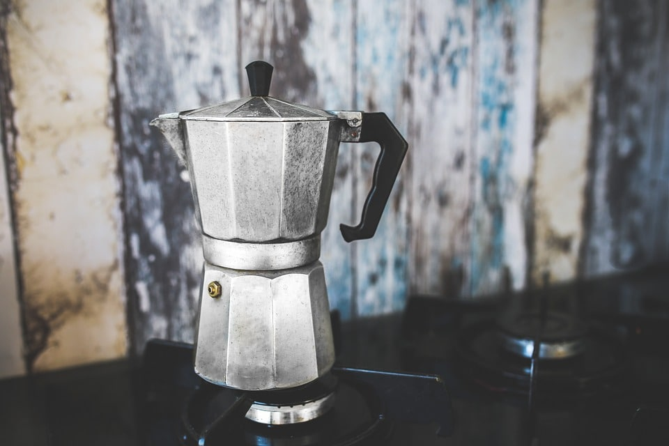
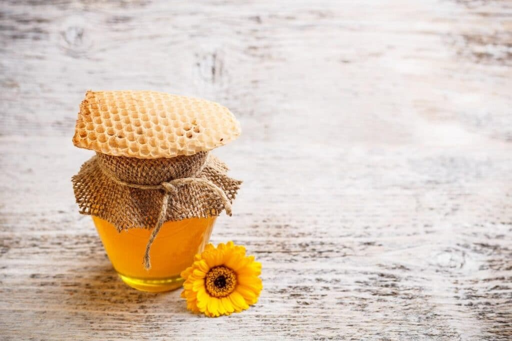
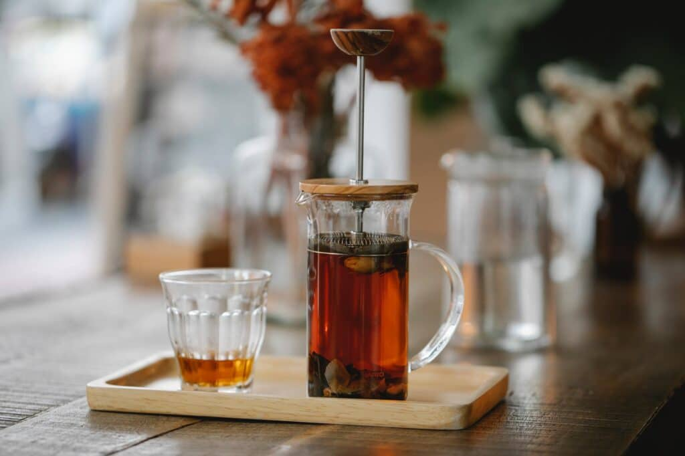
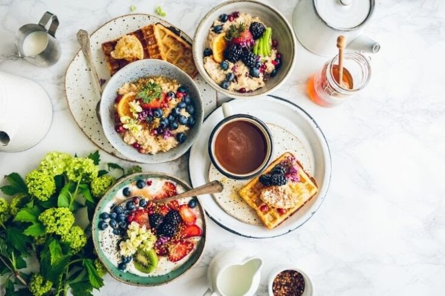
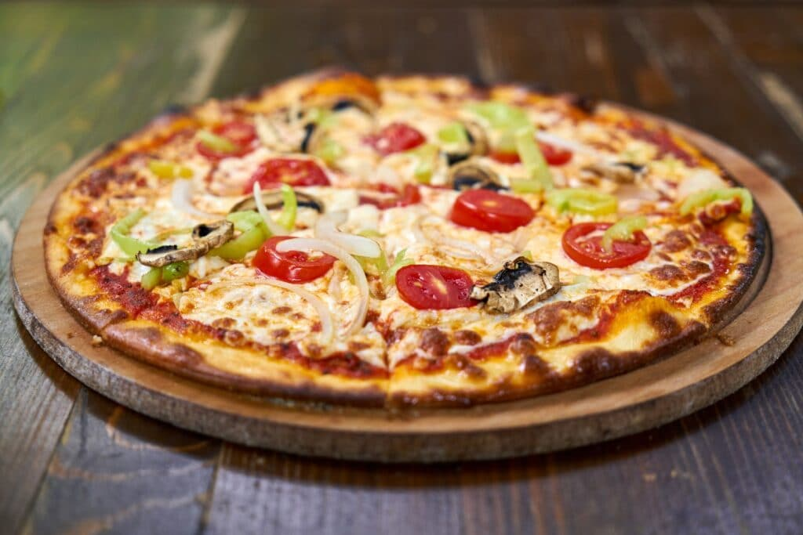
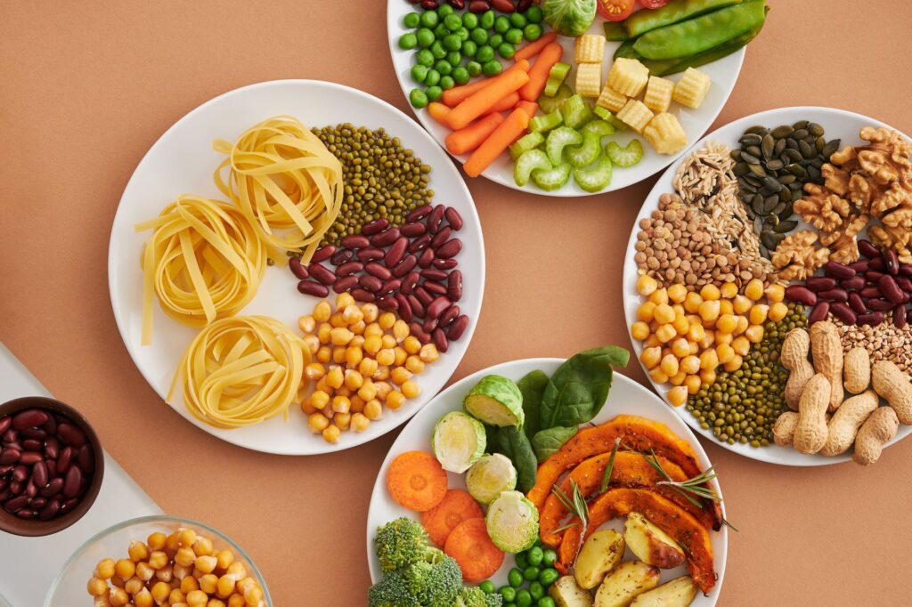

Food & Drink
Category : Food & Drink
How to Make Good Coffee With a Percolator

Making coffee is truly an art form. Many types of different coffees can be made with different types of tools and methods. One of these tools is called the percolator. The Percolator is an old-fashioned kettle-like brewing tool that is a traditional fan favorite. Percolators are favored by those who enjoy a rich, stronger brew. And if you are someone who prefers a lighter sweet coffee this may not be for you.
Food & Drink
How to Make Good Coffee With a Percolator

Have you ever been able to differentiate Pure Honey from chemical-based honey? If not, then you must have a gist of how 100% pure and chemical-free Honey actually tastes like.
Food & Drink
Amazing Benefits of Drinking Oregano Tea

Oregano is a popular herb and is used entirely, usually in culinary specialties. A common approach to use oregano is to apply it fresh or dry. Essences and necessary fats are also ready for buying. Another less common way is to apply oregano as tea.
Food & Drink
12 Foods You Need to Eat to Improve Your Muscle Health

It’s hard for you to believe that you can improve your muscle health without doing intense workouts. But let me tell you that you can do it with the right food that you eat. Many of you believe that proteins are the only macronutrient that you need for your muscle growth but it’s not true. There’s more to it as along with the proteins your body also requires a lot of other nutrients like carbs to compensate muscle glycogen stores and also to enhance insulin. It will help in enhancing amino acids into the muscles.
Food & Drink
Surprising Health Benefits of Eating Pizza

Pizza may look like a yummy treat, but the oiled pies do offer certain nutritional advantages. Although specific types of pizza are harmful, other less processed types can be healthy. Like all diets, more processed pizza kinds are generally higher in unhealthy ingredients than those baked from scratch.
Food & Drink
12 Best Cakes To Get For Your Friend’s Birthday
At any moment of the year, a beautiful and flavorful cake is central to any occasion. The right cake will bring a smile to everyone’s face, whether it’s a birthday, anniversary, wedding, promotion party, or any day of celebration. It’s a common thing to do to explore the choices for online best cakes delivery across all major cities and towns in India.
Food & Drink
Add 5 Superfoods In Your Diet To Have Better Health

During the past few years, the trends have changed and people are shifted towards unhealthy diets. This can be due to several reasons. But one of the most common reasons is that people don’t have enough time for their daily routine. And this can be something that is not good for their health and fitness.